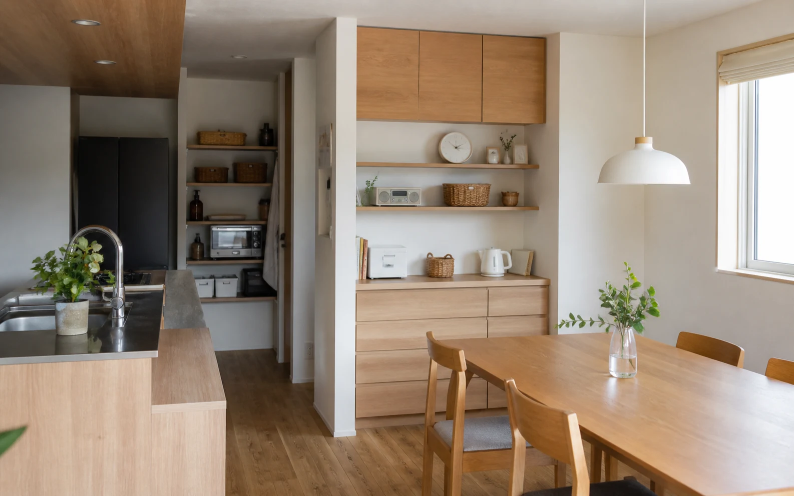
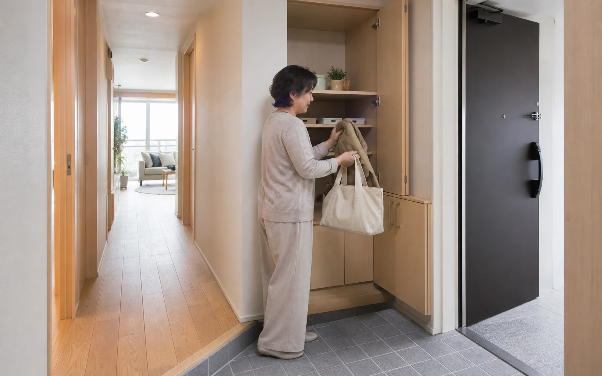
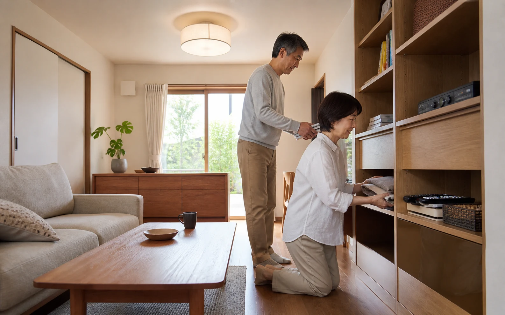

「また散らかってる……。どうして私は片づけられないんだろう」――そう自分を責めてしまうこと、ありませんか。私自身、子どもの頃から片づけが苦手で「自分は片づけられない人間だ」と思い込んでいました。ところが収納がたっぷりあるマンションに住んだ途端、まったく散らからなくなったのです。「片づけられない"人"がいるんじゃない。片づく"家"があるだけなんだ」――今回は、この確信を裏づけてくれた一冊を軸に、家の"仕組み"という視点をお話しします。
1. 片づけは、性格ではなく「仕組み」で変えられる
近藤麻理恵さんの『人生がときめく片づけの魔法』（サンマーク出版、2011年）を手がかりに、片づけを性格やセンスではなく、方法を学んで身につける技術として考えます。残すモノを選び、残したモノに定位置を決める。その考え方に、工務店の視点から「家の仕組み」を重ねます。
2. 片づけの考え方に、工務店の視点を一つ足したい――「家の仕組み」
片づけの定番書が教えてくれるのは主に「モノとの向き合い方」。私が足したいのは「そのモノを、家のどこに、どう収めるか」という設計・動線の話です。定位置が使う場所のすぐ近くにあるかどうかで、片づく家になるかが決まります。「モノを選ぶ技術」と「家の仕組み」は、片づけの両輪なのです。

3. 散らかる家に共通する、3つの落とし穴
①モノに「住所」がない。「とりあえずここ」に置いたモノは戻る場所がなく漂流します。②使う場所と、しまう場所が「遠い」。戻すのが面倒な距離があると、人はモノを出しっぱなしにします。③収納が「詰め込みすぎ」。取り出しにくく、しまいにくい収納は散らかりを生みます。
4. 片づく家の3原則
- ①すべてのモノに「住所」を決める。片づけが「考える作業」から「戻すだけの作業」に変わる。
- ②使う場所の"すぐ近く"にしまう（動線収納）。爪切りはリビングに、上着は玄関に。一歩で戻せる家は勝手に片づきます。
- ③収納は「7〜8割」でとどめる。少しの余白があるだけで出し入れが驚くほどラクになります。
5. お金をかけずに、今日からできること
「とりあえずボックス」を1つ置く、"1軍"だけを手の届く場所に、「帰る場所」を家族と共有する――新しい収納グッズを買う前に、まずは今ある家で試せることから。片づけの定番書でも「収納グッズを買うのは最後」と説かれています。まずはタダでできる"住所決め"から。それが一番効きます。
6. 築古の家で、収納やコンセントが足りないときは
築年数の古いお家は、そもそも収納が少なかったり、コンセントの数が足りなかったりします。まずは収納ラックで足せないかを検討し、コンセントも配置換えや電源タップで当面しのげます。それでも毎日ストレスに感じるなら「リフォームしたらいくらかかるか」だけでも概算を出しておく。今すぐやらなくても"予算を知っておく"だけで心の整理がつきます（信頼できる業者の選び方は第7回で）。

7. 片づく家は、家族の心にも効く
「片づけなさい！」ではなく「見える化」を。おもちゃ箱に"きれいに片づいた状態の写真"を貼っておくと、子どもは「いつも、この状態にすればいい」とひと目で理解できます。片づく仕組みは、家族のイライラを減らし、子どもの自立心を育て、気軽に人を招ける家をつくります。第1回でお伝えした「人が集まる家」も、実は片づけと無関係ではないのです。

よくある質問
片づけても、すぐにリバウンドしてしまいます。
＋
意志の問題ではなく、仕組みが整っていない可能性が高いです。「モノの住所」と「使う場所の近くにしまう」を見直すと、リバウンドしにくくなります。
片づけの定番書と、この記事の違いは何ですか？
＋
対立するものではなく両輪です。定番書は「モノとの向き合い方」を、この記事は「家の仕組み（動線・収納の配置）」を扱います。両方そろうと片づけはぐっとラクになります。
収納が少ない家は、どうすればいいですか？
＋
まず"使用頻度で分ける""7〜8割にとどめる"を試し、それでも足りなければラックで住所を足す。根本的に足りない場合は、収納を足すリフォームの概算を出しておくのがおすすめです。
家族が協力してくれません。
＋
まずは「よく行方不明になるモノ」だけ、家族で定位置を決めるのがおすすめ。子どもには、片づいた状態の写真を貼る"見える化"が効きます。
収納グッズは、買わないほうがいいのですか？
＋
「買うな」ではなく「順番」の問題です。仕組みを整える前に増やすと、かえって散らかります。まずタダでできる住所決めから、が鉄則です。
出典・参考資料を見る
- 近藤麻理恵『人生がときめく片づけの魔法』（サンマーク出版、2011年）

この記事を書いた人｜エイスケ
1986年生まれ、40歳。実家の建築業・不動産に10年間従事したのち、教育の世界へ。住宅と教育、両方のプロの視点から「豊かな暮らし」をテーマに忖度なく切り込みます。※本コラムは筆者個人の見解・経験に基づくものです。最終的な判断は各分野の専門家にご相談ください。